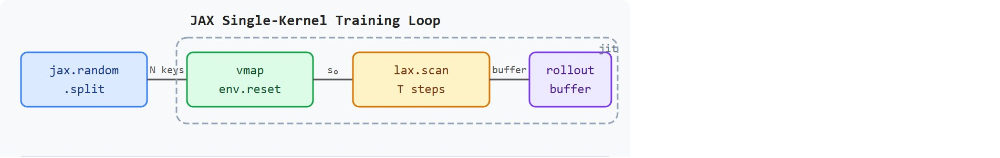

"When physics and gradients compile together, the boundary between simulation and learning disappears into a single kernel."
A JIT-Compiled Robot Physicist
This section assumes familiarity with the parallel-environment abstraction introduced in section 17.1 and the Proximal Policy Optimization (PPO) rollout recipe from section 17.2. If you are coming from the Isaac Lab path covered in section 17.3, note that the JAX compilation contract here differs from the SKRL and rl_games interfaces. The ideas developed in this section are extended in section 17.5, which applies the same compiled rollout loop to teacher-student distillation, and in section 17.6, which turns the throughput and cost levers visible here into concrete engineering decisions.
Eight thousand simulated robots are sprinting, falling, and recovering simultaneously on a single GPU, and the entire loop (physics, inference, advantage, update) never leaves the device. That is not a thought experiment; it is a standard MJX or Brax training run today. The breakthrough that makes it possible is JAX's ability to compile physics and learning into one stateless kernel. For embodied AI, this collapses overnight experiments into under an hour, which fundamentally changes which hypotheses are worth testing. By the end of this section you will build a fully compiled rollout loop, understand every shape constraint JAX imposes, and be able to launch reproducible locomotion experiments on a single accelerator.
When ETH Zurich's RSL group trained an ANYmal quadruped to walk in minutes (Rudin et al., 2022), the result was reproducible only because the MJCF contact model, the PPO clip ratio, the foot-clearance and joint-torque reward terms, and the terrain-and-pose reset distribution were all pinned in one training artifact. Change the friction coefficient on a Brax flat-ground reset, or let the velocity-tracking reward drift, and the same compiled rollout produces a policy that walks in sim but face-plants on the real ANYmal-C. MJX and Brax make these four pieces (simulator fidelity, PPO rollout semantics, reward terms, reset distribution) part of a single versioned, device-resident kernel rather than four separately-tuned scripts.
The JAX-native training contract for MJX and Brax rests on one mindset shift. JAX is a Python library for high-performance numerical computing that compiles array operations to GPU or TPU kernels and provides automatic differentiation; here it lets physics and learning share one compiled program. As Figure 17.4A illustrates, the shift is to think in batched arrays first: fixed shapes, explicit random keys, and rollout buffers sized before the first compile. The moving parts are vectorized environments, jit boundaries, vmap or batched stepping, lax.scan rollout collection, and explicit pseudo-random number generator (PRNG) key splitting. Concretely: jit is the JAX decorator that traces a Python function once and compiles it to a fused GPU or TPU kernel; vmap takes a function written for one environment and automatically maps it over a batch dimension without a Python loop; and lax.scan is the compiled equivalent of a for-loop, carrying state across steps while writing each step's output into a pre-allocated buffer. Figure 17.4B lays out how these pieces connect inside a single compiled kernel, from PRNG splitting through the scan-based rollout to the PPO update that feeds back into the next iteration.
So far: a reproducible MJX/Brax run pins simulator fidelity, PPO semantics, and reward/reset terms into one artifact, and JAX makes this practical by compiling jit, vmap, and lax.scan together into a single kernel driven by explicit PRNG keys. The diagram below shows exactly how those three primitives fit together.

The key question is practical: can the rollout loop be compiled once, run many times with fixed tensor shapes, and still produce independent training and evaluation episodes?
JAX rewards programs whose control flow and tensor shapes stay stable. Vary terrain, commands, and seeds through arrays, not through Python branches that force recompilation.
Use jax.lax.scan rather than a Python for-loop to collect rollout timesteps. A Python loop over horizon steps forces JAX to unroll the entire loop at trace time, inflating compile time and binary size for long horizons. With lax.scan, the carry (simulator state, PRNG key, policy params) and the output slice (observation, action, reward, done) must have fully static shapes before the first jit call; fix these shapes in the manifest before training starts. As a diagnostic, wrap your scan body with jax.make_jaxpr on a single step first to confirm no Python-side shape changes leak through.
This approach buys throughput and reproducibility. A conventional Python RL loop that calls a C++ simulator wastes a large fraction of its wall-clock time on Python overhead, host-device data copies, and sequential environment stepping. With 8,192 environments on a GPU, each Python call becomes a bottleneck. MJX and Brax remove that bottleneck: they express physics and RL as JAX array transformations that compile into a single device kernel. No Python loop runs in the hot path, no host-to-device copy happens per step, and the rollout stays entirely on the accelerator until the update finishes. To make that concrete: in practice, teams report a locomotion curriculum that takes on the order of 14 hours with a sequential Python-MuJoCo loop finishing in under 45 minutes with a compiled MJX rollout on the same GPU, roughly a 20x wall-clock reduction from one architectural decision; the exact ratio depends on horizon length, environment count, and how much of the original loop's time was Python overhead versus physics computation itself. Put another way, a hyperparameter search that would have required 50,000 sequential episodes to cover the same wall-clock budget can fit in roughly 300 compiled rollouts under favorable conditions, because each rollout steps all 8,192 environments in parallel inside a single device kernel. Gains of this magnitude are typical for throughput-bound locomotion workloads rather than guaranteed for every task; this generally changes what research is feasible to iterate on.
MJX provides MuJoCo-style physics through JAX arrays, while Brax provides a JAX-native physics and RL stack designed for massively parallel simulation. In both cases, the important unit is not an object-oriented environment instance; it is a batched simulator state transformed by pure functions.
A typical rollout uses the single-kernel training loop: a compiled function mapping policy parameters, simulator state, and random keys to new state and experience tensors. Before training begins, the builder must pin down three things: which dimensions are static, which arrays are donated (marked so JAX can overwrite their device memory in place instead of allocating a fresh buffer) or reused, and how many bytes the rollout buffer consumes.
The choice between MJX and Brax reduces to one trade: MuJoCo fidelity versus setup speed. The rest of this contract is identical for both.
Choose MJX when your task requires MuJoCo's contact model, articulated body semantics, or existing MJCF assets. MJX preserves those modeling concepts while making the step function JAX-compatible. Choose Brax when you prototype from scratch and want the full RL environment API (reset, step, reward, done) in a single JAX-native package with less setup friction. MJX costs you coverage: the JAX backend does not support every MuJoCo feature. Brax costs you fidelity: its simplified contact model may not match hardware behavior when precise contact forces matter. Teams building locomotion policies often start with Brax for fast iteration, then switch to MJX when they need higher-fidelity contact dynamics for sim-to-real transfer. A policy that runs perfectly in simulation but collapses on hardware is not a trained policy; it is a well-compiled guess.
The mechanism is functional batching: split a PRNG key into per-environment keys, step a batch of simulator states, write observations and rewards into a fixed-shape buffer, and use compiled array operations for the update. Debugging starts by printing shapes, dtypes, memory footprint, and key counts.
Code Fragment 17.4.1 estimates the rollout buffer before writing a JAX training loop. This is the first sanity check for whether a planned MJX or Brax experiment fits on the accelerator.
# Estimate device memory for a JAX-native rollout buffer.
# Static shapes should be chosen before jit compilation and training launch.
num_envs = 8192
horizon = 32
obs_dim = 64
act_dim = 12
float_bytes = 4
buffers = {
"observations": horizon * num_envs * obs_dim * float_bytes,
"actions": horizon * num_envs * act_dim * float_bytes,
"rewards": horizon * num_envs * float_bytes,
"dones": horizon * num_envs * float_bytes,
"values": horizon * num_envs * float_bytes,
}
total_mb = sum(buffers.values()) / 1_000_000
for name, size in buffers.items():
print(f"{name}: {size / 1_000_000:.1f} MB")
print(f"rollout buffer total: {total_mb:.1f} MB")Expected output: the trace should expose which tensor dominates memory. A JAX run that recompiles or spills buffers because shapes were guessed late will lose the throughput advantage this section is trying to teach.
Brax and MJX already provide the simulator side of the accelerator-native shortcut. The builder's job is to keep the surrounding RL code compatible with that shortcut: no per-environment Python loops, no shape changes inside the hot path, and no hidden transfer from device to host during rollout collection.
Before reading on, guess: if a sequential Python-MuJoCo loop requires 14 hours to train a quadruped locomotion policy, how much of that time is JAX compilation overhead versus actual physics steps on the GPU?
The memory estimate above sizes the buffer; the following skeleton is the compiled rollout itself, the piece this section's title promises and that the Algorithm box below formalizes. It shows the actual wiring of vmap, lax.scan, and jit around a policy and an MJX or Brax environment, so the shapes and calls named earlier have one concrete home before the abstract algorithm.
# Minimal compiled rollout skeleton (illustrative, not a runnable full trainer).
# vmap parallelizes reset/step across environments; lax.scan collects the horizon;
# jit fuses both into one device-resident kernel.
import jax
from jax import lax
def rollout(params, env, key, num_envs, horizon):
reset_keys = jax.random.split(key, num_envs)
state = jax.vmap(env.reset)(reset_keys)
def scan_step(carry, _):
state, step_key = carry
step_key, action_key = jax.random.split(step_key)
actions = policy_apply(params, state.obs, action_key) # vmapped internally
next_state = jax.vmap(env.step)(state, actions)
done_mask = 1.0 - next_state.done
reward_masked = next_state.reward * done_mask
return (next_state, step_key), (state.obs, actions, reward_masked, next_state.done)
(final_state, _), trajectory = lax.scan(
scan_step, (state, key), xs=None, length=horizon
)
return trajectory # (obs, actions, rewards, dones), each shape (horizon, num_envs, ...)
compiled_rollout = jax.jit(rollout, static_argnums=(3, 4))vmap, lax.scan, and jit around a generic MJX or Brax environment. policy_apply stands in for whatever network library produces actions from observations; the point is that reset, step, and the done mask all stay inside array operations, with no Python-level branching per environment or per step.Input: policy parameters $\theta$, simulator model $\mathcal{M}$, batch size $N$, horizon $T$, learning rate $\alpha$, PRNG root key $k_{\text{train}}$
Output: updated parameters $\theta'$, rollout buffer $(s_{1:T}, a_{1:T}, r_{1:T}, d_{1:T})$, per-step throughput estimate
jax.vmap over the $N$ environment keys.lax.scan step: carry $= (s_t, \theta, k_t)$; emit $(s_{t+1}, a_t, r_t, d_t)$ where $a_t \sim \pi_\theta(s_t)$ and $s_{t+1} = \text{vmap}(\mathcal{M}.\text{step})(s_t, a_t)$. (Every environment steps forward regardless of $d_t$; the done flag is only applied as a mask afterward, a design choice the warning box later in this section explains in full.)jax.jit(lax.scan)(rollout\_body, init\_carry, xs=None, length=T) to collect the full horizon in one device-resident kernel; record compile time separately from step 6 onward.jax.grad and an Optax (a JAX-native gradient-processing and optimization library) optimizer step.The common mistake is to benchmark after the first call and include compilation time in one result but not another. Another common mistake is to change batch shape during curriculum updates, causing silent recompilation and confusing wall-clock comparisons.
A natural assumption is that a compiled JAX rollout handles episode termination the same way a Python-driven MuJoCo loop does. In a Python loop, a done flag triggers an immediate reset and the next step begins a fresh episode. That assumption is wrong in JAX. lax.scan requires fully static control flow and fixed tensor shapes, so there is no conditional early exit. Done flags travel as a boolean mask inside the fixed-shape buffer. The environment performs an array-conditional reset at every step, regardless of whether the episode actually ended. Every environment in the batch always steps forward. Termination is a masking operation applied to rewards and observations after the fact, not a branch that stops and restarts the simulation kernel.
Think of a relay-race scoreboard that records every lap whether or not a runner has finished. The scoreboard does not stop the clock when someone crosses the finish line; it simply marks that runner's remaining laps with a zero and keeps ticking for everyone else. At the end of the race, the scoring committee zeroes out any laps run after a runner already finished. A JAX rollout works the same way: every environment steps forward on every tick regardless of whether its episode ended, and the done flag is applied as a mask when advantages are computed, not as a branch that halts and restarts the simulation.
A team building an MJX quadruped task should freeze the model topology, observation shape, and horizon during a benchmark. Terrain difficulty can change through arrays and masks, while the compiled rollout shape remains constant.
Trace one scan step for a tiny batch of N=3 environments, horizon T=4, currently at step t=2. The raw per-environment rewards emitted by vmap(env.step) are r = [1.0, 0.5, 2.0]. Environment 1 (index 1) terminated at the previous step, so the carried done mask is d_prev = [0, 1, 0]. The masking rule keeps reward only while the episode is live, so the survival multiplier is (1 - d_prev) = [1, 0, 1]. Element-wise: r_masked = r * (1 - d_prev) = [1.0*1, 0.5*0, 2.0*1] = [1.0, 0.0, 2.0]. Environment 1 contributes 0.0 even though the kernel still stepped its physics. The new done flags from this step are d_now = [0, 1, 1] (environment 2 just finished), and the carried mask becomes d_carry = d_prev OR d_now = [0, 1, 1], so at t=3 the multiplier will be [1, 0, 0]. Note that all three environments stepped forward on every tick; only the scoreboard changed. The buffer slice written at t=2 is therefore rewards[2] = [1.0, 0.0, 2.0] with no Python branch anywhere in the loop.
Google DeepMind's MuJoCo Playground (2025) ships MJX training recipes that take a Unitree Go1 or Berkeley Humanoid policy from random initialization to a deployable gait in minutes on a single GPU, using exactly the compiled lax.scan rollout and fixed-shape buffer pattern in this section. The same JAX kernels that train in sim are exported and run zero-shot on the physical robots, which is only reproducible because shapes, reward terms, and PRNG roots are pinned in one artifact. This collapses the sim-to-real iteration loop from overnight runs to coffee-break experiments.
JAX is happiest when the experiment arrives wearing the same tensor shape every day. Surprise it with a new shape mid-run, and the compiler gets a vote.
Differentiable simulation through contact for policy gradients. The JAX/MJX stack opens a path to computing analytic gradients through physics, not just through the policy. Google DeepMind's work on MJX-based gradient-informed locomotion (2024) and the broader "differentiable simulation for RL" program at CMU and Berkeley are pushing contact-gradient estimators that reduce sample complexity by an order of magnitude relative to pure PPO on the same hardware budget. The open challenge is gradient instability through rigid contact: small perturbations in foot placement produce large, discontinuous force jumps that explode gradients, and current fixes (soft contacts, randomized smoothing) trade physical fidelity for gradient smoothness.
Hardware-accelerated multi-task curriculum at scale. PKU-MARL's GPU-resident multi-agent training framework (2024) and Google DeepMind's robotics scaling experiments demonstrate that compiling curriculum transitions (terrain difficulty, command velocity range, perturbation magnitude) as JAX array schedules rather than Python callbacks sustains near-linear throughput scaling from 8 K to 128 K simulated agents on TPU pods. The gap is curriculum design: current schedules are hand-tuned per morphology, and learning the curriculum jointly with the policy inside a single compiled program remains an open problem.
End-to-end vision-to-action training in compiled rollouts. Stanford IRIS and ETH Zurich's RSL group (2025) have begun integrating convolutional or transformer vision encoders directly into MJX/Brax rollouts compiled with lax.scan, keeping rendered depth or egocentric RGB frames device-resident throughout. Per-step render cost and buffer memory (a 64x64 RGB stream for 8,192 environments consumes roughly 3.2 GB per 32-step horizon before policy weights or optimizer state) currently limit vision-based training to smaller batch sizes or shorter horizons than proprioceptive baselines.
Open problem for PhD research: All three directions above assume the rollout shape is fixed at compile time. A principled method for dynamically varying the number of active environments (for example, dropping early-terminated episodes to free memory and refilling with fresh resets) without triggering JAX recompilation does not yet exist. Solving this would allow adaptive batch sizing inside a single training run, improving hardware utilization when episode length is highly variable across a curriculum.
Can you name the static rollout shape, memory footprint, PRNG key schedule, compile boundary, and held-out evaluation key stream? If not, the MJX or Brax run is not yet reproducible.
The idea in this section becomes useful when accelerator constraints are treated as part of the algorithm. A JAX RL loop is fast because it exposes the whole rollout as a regular computation graph. That same regularity means dynamic episode bookkeeping, variable-size observations, and host-side logging must be designed carefully.
The graduate-level habit is to report compile time, steady-state steps per second, memory footprint, shape choices, and key schedule separately. Otherwise a result may confuse a better algorithm with a better compilation path.
Knowing which quantities to report separately is only half the discipline; the table below names the specific tools that produce each of them, so you can map every reporting field to the library call responsible for it.
| Tool or Library | Role in the Topic | Builder Advice |
|---|---|---|
| MJX | MuJoCo-style models through JAX arrays | Use it when you want MuJoCo modeling concepts with accelerator-friendly batched stepping. |
| Brax | JAX-native batched physics and RL environments | Use it when fast parallel simulation and functional training loops are the main goal. |
jax.jit | Compile rollout and update functions | Use it around stable hot paths, and keep shape-changing logic outside benchmarks. |
jax.vmap or batched state | Apply one step function across many environments | Use it to express environment parallelism as array structure rather than Python loops. |
jax.random.split | Independent randomness for environments and evaluation | Use it to record train and evaluation key streams without accidental reuse. In embodied AI this matters because a real robot cannot re-run the same terrain sequence; if your sim evaluation accidentally replays training terrains, reported success rates overestimate what the robot will encounter on deployment. Mechanically, jax.random.split(key, n) deterministically derives n statistically independent child keys from one parent, so you can give each of 8,192 simulated environments its own key without correlation, while keeping a separate root for held-out evaluation that never overlaps the training stream. |
Once those tools are chosen, the next step is to pin down how they will be configured for a given run, and that record is what a manifest captures. A robust implementation starts with a JAX run manifest. It records the shapes that must stay static, the keys that drive randomness, and the metrics that separate compilation overhead from steady-state throughput.
# Record the JAX-specific fields that make an MJX or Brax run auditable.
# Static shapes and separate PRNG roots prevent hidden recompilation and leakage.
from dataclasses import dataclass, asdict
@dataclass
class JaxRlManifest:
simulator: str
batch_shape: tuple[int, int]
obs_dim: int
action_dim: int
train_key_root: int
eval_key_root: int
def as_row(self) -> dict[str, object]:
return asdict(self)
manifest = JaxRlManifest(
simulator="MJX",
batch_shape=(32, 8192),
obs_dim=64,
action_dim=12,
train_key_root=1704001,
eval_key_root=1704999,
)
print(manifest.as_row())JaxRlManifest dataclass and prints the recorded fields for an MJX run with 8,192 environments. The batch shape fixes the rollout compilation contract, while separate key roots prevent evaluation from reusing training randomness.When a JAX-native run fails, separate numerical, compilation, and RL causes. Check NaNs, dtype choices, action clipping, reset masks, key reuse, recompilation counts, and host-device transfers before blaming the policy architecture.
For MJX and Brax experiments, compare only construct-matched metrics that are co-computed in one pass on one configuration: same batch shape, same simulator model, same policy checkpoint, same PRNG key panel, same perturbation suite, and the same success definition. Save compile time, steady-state steps per second, memory footprint, return, success, and failure labels as one artifact.
MJX and Brax make GPU RL effective when the experiment is expressed as stable batched array transformations. Static shapes, explicit PRNG keys, and device-resident buffers are part of the scientific method, not just implementation details.
Design an MJX or Brax benchmark with 8,192 environments. Specify horizon, observation dimension, action dimension, rollout memory, train key root, evaluation key root, and how you would report compile time separately from steady-state throughput.
Goal: empirically separate JAX compilation overhead from steady-state throughput, and watch silent recompilation happen when you break the static-shape contract.
Tools needed: a machine with one GPU, pip install brax jax[cuda12], and Python 3.11+. Use the built-in Brax ant or halfcheetah environment and the bundled brax.training.agents.ppo trainer.
Steps: (1) Wrap the training call in a timer and run for a small number of timesteps with num_envs=4096, recording wall-clock from process start to first completed update versus the time per update after the first. (2) Set the environment variable JAX_LOG_COMPILES=1 so every XLA (Accelerated Linear Algebra, the compiler JAX uses to turn array operations into GPU or TPU kernels) compilation prints to the console.
What to vary: change num_envs from 4096 to 2048 to 8192 between runs, and separately change the unroll length (horizon) mid-script.
What to observe: the first update should be far slower than the rest (that gap is compile time). Every time you change num_envs or horizon you should see a fresh "Compiling ..." line, confirming that shape changes trigger recompilation. Plot steps-per-second against num_envs and confirm throughput scales sub-linearly once the GPU saturates. You now have a direct measurement of why this section insists on freezing shapes before benchmarking.
Beginner (weekend): Train a Brax hopper to balance using PPO with a compiled lax.scan rollout loop. Write the JaxRlManifest dataclass from this section, run 1,000 update steps on a single GPU, and log compile time separately from steady-state throughput. The key challenge is keeping tensor shapes static across the full training run so JAX does not silently recompile when you change the horizon or batch size mid-experiment.
Intermediate (1 to 2 weeks): Build an MJX quadruped locomotion curriculum where terrain difficulty increases through domain-randomized friction arrays rather than Python branches, using a Gymnasium (the standard reset/step/reward/done environment interface used across most RL libraries)-compatible wrapper around the MJX step function so you can swap in PyBullet or a Brax equivalent for ablation. The key challenge is designing the done-flag masking so episode resets remain a compiled array operation at every step, never a Python conditional that forces recompilation and destroys the throughput advantage of the device-resident rollout.
This section turned MJX and Brax training into a JAX-native contract: fixed shapes, explicit random keys, memory budgeting, compile boundaries, and held-out evaluation. Next, continue with Section 17.5, where privileged-information teachers use these fast simulators to train deployable students.
Rudin et al. provide the locomotion workload that many JAX-native efforts try to accelerate or reproduce. Use it as a behavioral target, not as evidence that any new simulator setup transfers automatically.
Isaac Gym is useful here as the GPU-resident predecessor to newer accelerator-native workflows. It frames why MJX and Brax also care about keeping simulation and learning close to the device.
Brax is central to this section because it treats physics and RL as JAX-friendly batched computation. Use it to study functional environment stepping, vectorization, and accelerator-scale rollout design.
NVIDIA Isaac Lab documentation.
Isaac Lab offers a useful contrast to MJX and Brax. It emphasizes task and runner integration around Isaac Sim, while this section emphasizes compiled JAX loops and static rollout shapes.
Google DeepMind MuJoCo MJX documentation.
MJX is the primary source for MuJoCo-style physics inside JAX. It is the reference to consult for API boundaries, supported model features, and how batched data differs from classic MuJoCo usage.
RSL-RL is included as a non-JAX point of comparison for PPO storage and locomotion conventions. It helps readers distinguish algorithm settings from simulator execution model.